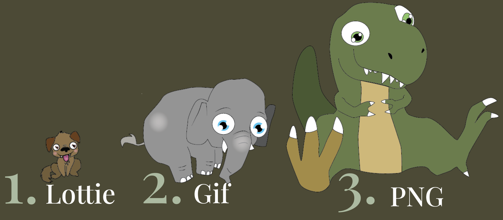

For langt de fleste hjemmesider er deres helt store synder for tunge hjemmesider deres video, billeder og animationer. I dette afsnit vil vi kigge nærmere på video og animation, som kan være nogle af de største filer på ens webløsninger, hvis man bruger dem. Bevægelse er en god måde at fange brugerens opmærksomhed og giver dem en mere interaktiv(?) brugeroplevelse. Men den gode nyhed er, at der er en måde at gøre det på, på en mere bæredygtig måde!
Først og fremmest, ligesom alt andet indenfor bæredygtigt webdesign, så er det vigtigt kun at bruge plads på det der er nødvendigt. Undgå at overforbruge animationer og video på en overdrevet måde, så det ikke gør brugeren helt rundtosset eller forvirret(?). Og ellers handler det mest af alt om at vælge de rigtige filformater og ikke loade videoer, som brugeren ikke aktivt selv har valgt de vil se.
AVI viser multimedie indhold af meget høj kvalitet og heraf fylder den også enormt meget i forhold til andre.
MOV er et format udviklet af Apple. Anvendes typisk ikke direkte på sites, da filtypen fylder meget.
WMV er udviklet af Microsoft og understøttes ikke af Apple. Filen er af høj kvalitet og fylder forholdsvis lidt.
AVCHD bruges ofte i forbindelse med digitale videokamera, derfor har den høj kvalitet, men fylder ekstremt meget.
WebM er det format der fylder mindst, efterfulgt af MP4. Disse er de mest optimale formater til afspilning af videofiler, med udgangspunkt i det bæredygtige aspekt. Samt hvis man undgår autoplay afspilninger og optimerer længden af videomaterialet, vil det have en stor betydning ift. brugen af energi på et site.
Når du skal bruge animationer på dit site, er der flere forskellige filformater du kan vælge mellem. Herunder ses en oversigt over de mest gængse formater PNG sequence(APNG), Gif, SVG og Lottie, samt deres forskellige egenskaber så du bedre kan vurdere hvilket filformat der er mest optimalt for dit projekt.
Lottie er 600% mindre end en gif, hvilket ca. svarer til størrelses forskellen mellem en hund og en elefant.
En animeret SVG fil er mindre end en gif, men præcis hvor stor størrelsesforskellen afhænger af den mængde kode du bruger til at animere SVG filen.
Kilder: https://lottiefiles.com/blog/working-with-lottie-animations/difference-png-svg-lottie
https://lottiefiles.com/what-is-lottie